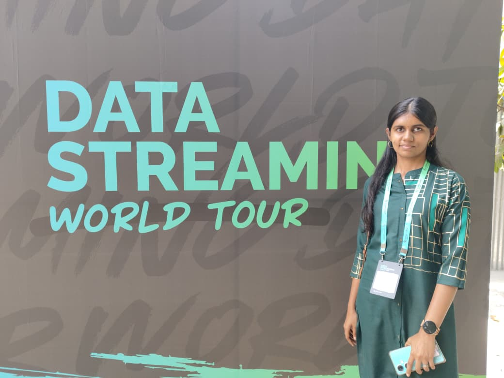
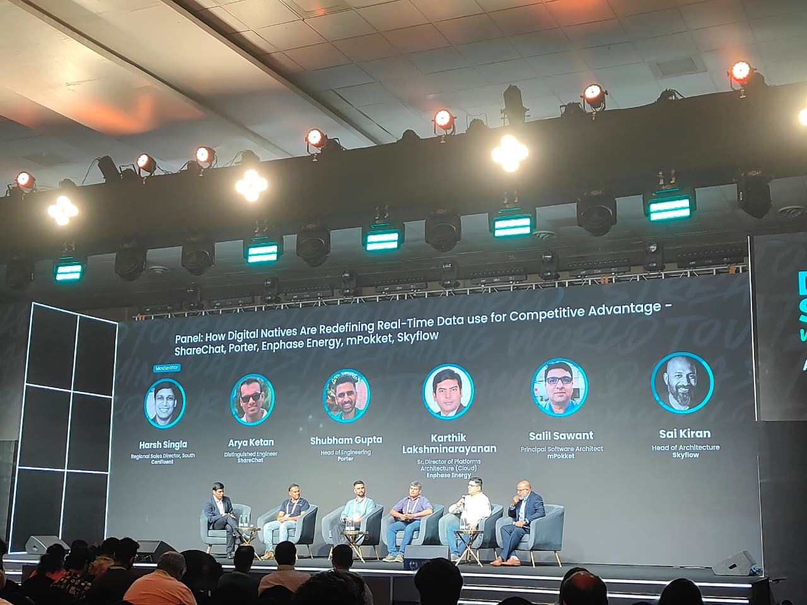
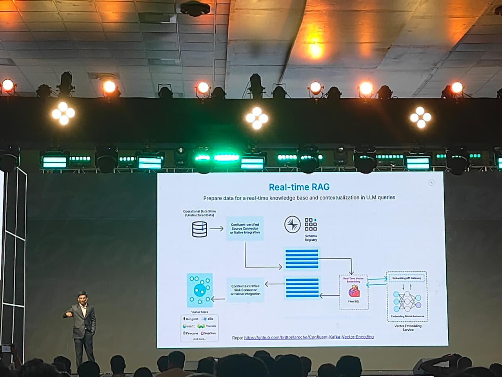

Going in, I expected a typical data engineering event — Kafka, pipelines, the usual architecture debates. The conversations turned out to be more practical than I'd prepared for.
Not focused on tools, but on how systems actually behave under pressure in real-world scenarios. The keynote from Confluent set a clear direction for everything that followed.
The central thesis was deceptively simple: real-time data is no longer an optimization. It's becoming the default. At first it sounded familiar. But as the day unfolded, the same idea kept reappearing in different shapes.

Swiggy: decisions in milliseconds
The first case study made the central theme visceral. Swiggy's delivery decisions don't run in seconds — they run in milliseconds. A single assignment involves four simultaneous signals:
- Live location
- Real-time traffic
- Partner availability
- Fairness in allocation
Any delay in the decision pipeline translates directly into a worse user experience. There's no buffer to hide behind.
Different domains, the same problem
The panel brought together ShareChat, Porter, and Skyflow — companies operating in entirely different worlds. What was striking was how convergent their challenges were.
- User preferences
- Content recommendations
- Engagement signals
- Fairness in earnings
- Location clustering
- Ongoing deliveries
Tokenization means sensitive data can be protected without slowing the system down. Usually security adds latency — here the goal was maintaining both simultaneously. That tension, and how they resolved it, was the most technically interesting part of the panel.

The line that reframed everything
The AWS session delivered the sharpest insight of the day — a single sentence that clarified something I'd half-understood but never articulated cleanly.
AI doesn't fail because of models. It fails because the data is late.
That reframes where to look when things don't work. Most instincts point toward the model — tune it, retrain it, replace it. But often the actual failure is upstream:
- Delayed data arriving too late to act on
- Outdated signals making decisions stale
- Slow pipelines creating invisible lag
This point echoed through later sessions from mPokket and Groww — credit decisions, user behaviour tracking, financial insights. These aren't things you batch. They need to happen as the data arrives.
Streaming-first, not streaming-also
Meesho's session on intelligent systems design made the architectural argument concrete. The move isn't from one tool to another — it's a different mental model entirely. Systems designed to react continuously rather than accumulate and process later.
The hallway conversations between sessions reinforced this. Teams weren't exploring the idea — they were already in transition, working through the real friction of migrating existing pipelines.
- Moving from batch to streaming in production
- Migration challenges with legacy systems
- Handling scale in real-time pipelines
- ClickHouse, Kafka alternatives, streaming infra

The direction of travel
Different companies. Different domains. Different problems. But a clear shared direction.
- Store data
- Process it later
- Decide after the fact
- Process as it arrives
- React immediately
- Decide in real time

Not new ideas — better connections
This event didn't introduce completely unfamiliar concepts. What it did was connect them in a way that felt more coherent. The shift from storing data to reacting to data isn't a future concern — it's already underway across backend systems, data engineering, and AI applications.
If you're building anything today, this inflection point is already relevant to your decisions.
We are moving from systems that store data to systems that react to data.
Not something to prepare for later — something that is already happening.